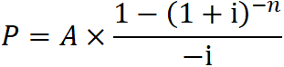
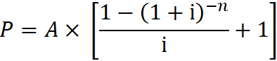
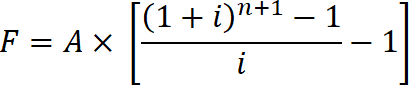

CFA Textbook
--------------------
Study Session 2 Quantitative Methods : Basic
Concepts
--------------------
Reading 6 The Time Value of Money
--------------------
Summary
- The interest rate, r, is the required rate of return; r is
also called the discount rate or opportunity cost.
- An interest rate can be viewed as the sum of the real
risk-free interest rate and a set of premiums that compensate lenders
for risk: an inflation premium, a default risk premium, a liquidity
premium, and a maturity premium.
中文手册整理
- 利率的三种形式
- 要求回报率 = 无风险利率 + 风险溢价
- 折现率
- 有效年利率EAR
- 现值-终值 ~ PV，FV，r，n
- 年金 annuity ~ 现值P，终值F，年金A，利率i，期数n，递延期数m
- 相同现金流（equal cash flow），相同时间间隔(equal interval)
- 递延期数m，前端没有收付款的期数
- 普通年金 normal annuity
- 每期期末等额收付款，又称后付年金
- 现值
- 终值

- 先付年金 annuity due
- 每期期初等额收付款，又称预付年金
- 现值
- 方法一：实付的n期在m期末的现值折现
- 方法二：虚付m期+实付的n期的现值 - 虚付m期的现值
- 
- 终值
- 递延年金
- 永续年金 perpetuity
- 机会成本
- 相同风险水平（identical risk）的次优水平（next best）收益率
- 货币时间价值的应用
- 不等额现金流量终值和现值的计算
- 分段年金流量
- 养老金
--------------------